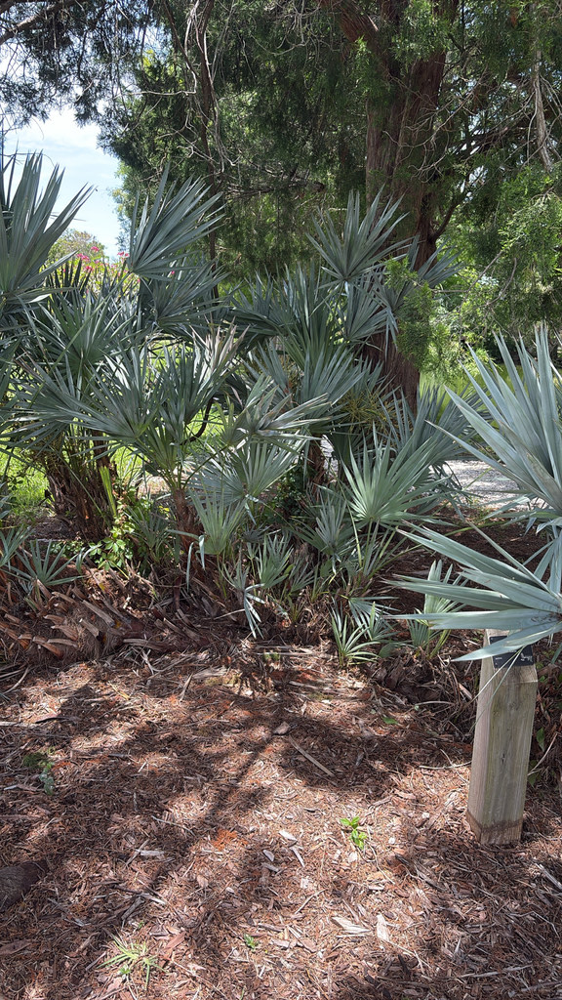

- The plant in front of you may be older than you think — by a lot. Individual saw palmetto stems can exceed 500 years, and a single clonal colony has been estimated at over 5,000 years old. Some researchers believe certain genets predate European contact by millennia.
- Florida wild-harvests millions of pounds of these berries annually for a $105 million prostate-health supplement industry. A state permit is required to pick them.
- Ecologists classify it as a critical keystone species; a massive array of Florida wildlife relies on it for food, cover, and nesting.
- The name comes from the leaf stems, not the fronds — each petiole is lined with stiff, recurved teeth sharp enough to slash skin. Wear long pants if you walk through a thicket.
Native to the southeastern United States coastal plain, from southeastern Louisiana to southern South Carolina, with Florida at the heart of its range. Here it is the dominant understory plant across millions of acres of pine flatwoods, coastal dunes, scrub, and oak hammocks.
It is not introduced or transplanted — this is one of the most abundant and geographically widespread palms in North America, and it has been part of Florida's landscape long enough that some clonal colonies appear to predate the Columbian Exchange.
- Saw palmetto's creeping, horizontal stems sprawl underground, throwing up clusters of fan-shaped fronds that look like individual plants but are often genetically identical branches of one vast organism. A single clone can cover a substantial patch of ground, and molecular studies have pushed estimated genet ages past 5,000 years.
- What looks like a low shrub at your feet may be a living record of Florida before the Spanish arrived.
- Fire is not an enemy to saw palmetto — it is practically a collaborator. The plant carries the highest fuel biomass of the ten common Florida flatwoods understory species, burns hot, and then resprouts almost immediately from deep rhizomes. The result is that saw palmetto both maintains and benefits from the fire-dependent ecosystems it dominates.
- Land managers trying to restore longleaf pine flatwoods often work with saw palmetto as much as around it.
- The berry harvest is a cottage industry embedded in Florida's agricultural labor calendar. Nearly the entire global commercial supply of saw palmetto extract — used widely as a supplement for benign prostatic hyperplasia — is wild-harvested in Florida and adjacent Georgia, with an estimated 4,500 to 8,000 metric tons of fresh berries taken annually in good years.
- The Florida Department of Agriculture placed saw palmetto on its Commercially Exploited Plant List in 2018, making a free permit mandatory to harvest, transport, or sell the berries. Indigenous peoples were eating and drying the berries before 1575 — the first written record of their use predates Florida statehood by nearly three centuries.
By almost any measure, saw palmetto is Florida's most important single wildlife plant. Researchers have documented more than 100 bird species, 27 mammals, 25 amphibians, and 61 reptile species depending on it for food, cover, or nesting.
Black bears rely heavily on the ripe berries in late summer and fall; white-tailed deer browse the fruit especially in dry years; wild turkeys, raccoons, and numerous songbirds all make use of the same harvest. The Florida scrub jay — a threatened subspecies — uses dense saw palmetto stands as essential cover in its scrub habitat.
At bloom time in late spring and early summer, the branched flower clusters become a significant pollinator resource. Documented bee visitors run to dozens of species, including multiple native Colletes, Augochlora, and Megachile bees.
The Florida Native Plant Society also lists saw palmetto as a larval host for the monk skipper (Asbolis capucinus) and palmetto skipper (Euphyes arpa) butterflies, and as a nectar plant for the atala and Bartram's scrub-hairstreak — two of Florida's more notable butterfly species.
Two modes: vegetative spread via horizontal creeping stems and rhizomes — which produces the characteristic clumping habit and allows colonies to expand across large areas — and sexual reproduction by insect-pollinated flowers followed by animal-dispersed seed. Seeds are dispersed primarily by vertebrates that eat the fruit.
Small, creamy-white, mildly fragrant flowers borne in dense, branching panicles up to about 3 feet long that emerge below the frond canopy. In Florida, blooms appear from roughly February–March in the south to April–May farther north, with peak flowering in spring.
Olive-shaped drupes about 0.5–1 inch long; green when immature (May–July), turning yellow-orange through August, ripening to blue-black in September–October. Each drupe contains a single seed.
Stems typically creep horizontally at or just below ground level — the plant is essentially trunkless in most forms, though rarely an individual stem will become upright and tree-like. Each stem carries 12–30 fan-shaped, evergreen fronds divided into stiff, pointed segments.
Leaf color ranges from green to silver-blue; the silver-blue form is more common on Florida's east coast but occurs throughout the range.
Leaf stems (petioles) are armed with stiff, recurved teeth — the feature that gives the plant its common name and that can cause significant cuts to anyone moving through a dense thicket.
Start at the base: the spreading, ground-hugging stems are the clue that what you're looking at is not a cluster of individual plants but branches of one organism. Look for the serrated petioles — rows of sharp, recurved teeth along each leaf stem — that give the plant its name.
In late spring, watch for the cream-colored flower panicles arching out beneath the fronds; by late summer the same stalks carry clusters of olive-shaped berries turning from green through orange to blue-black.
Check the frond color: green and silver-blue forms sometimes grow side by side.
The primary hazard is physical: the razor-sharp serrated leaf stems can cause severe lacerations to anyone clearing them.
The ripe berries are technically edible and were eaten by Indigenous peoples, but raw they're strongly musky and acrid.
The extract is a pharmaceutical-grade supplement, not a food — don't self-medicate with raw berries, which carry hormonally active compounds.
For dogs, raw berries may cause mild stomach upset but aren't a poisoning risk; the serrated stems are the real danger.
NOMENCLATURE: The synonym Serenoa serrulata (Michx.) Nichols. appears in older references; Serenoa repens (Bartr.) Small is the accepted name. The genus Serenoa is monotypic — saw palmetto is its only species, and it is found nowhere in the world outside the southeastern United States coastal plain.
HARVEST REGULATION: As of July 17, 2018, Florida lists saw palmetto on its Commercially Exploited Plant List. A free permit from the Florida Department of Agriculture and Consumer Services (FDACS) is required to harvest, transport, or sell the berries, even from private land. Unpermitted harvest is a criminal offense.


- © Randall Carter (CC-BY-NC), via iNaturalist